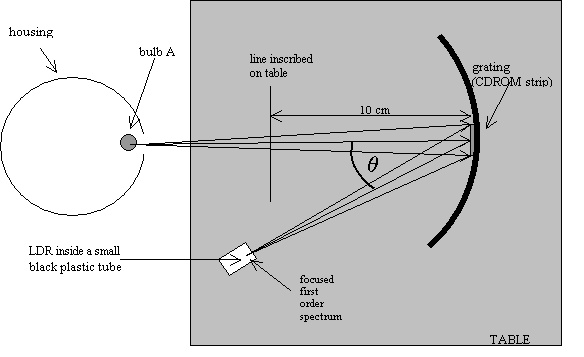
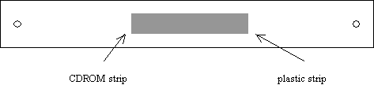
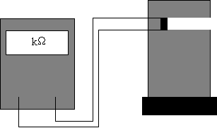
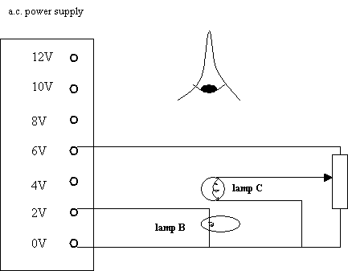
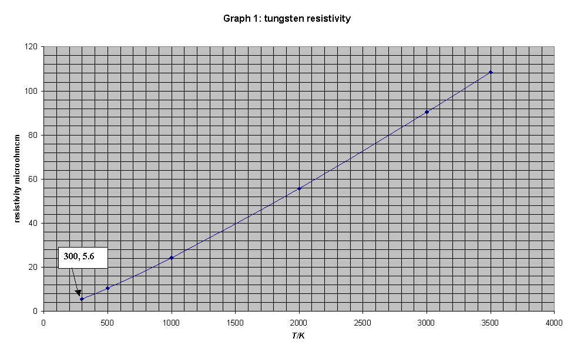
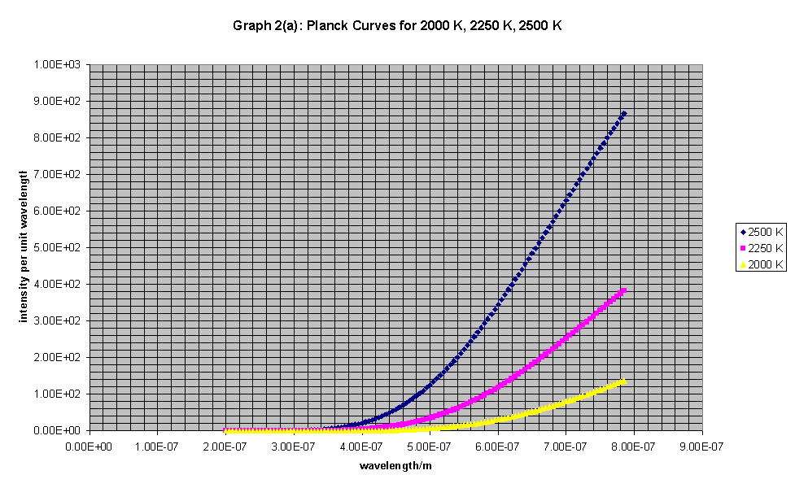
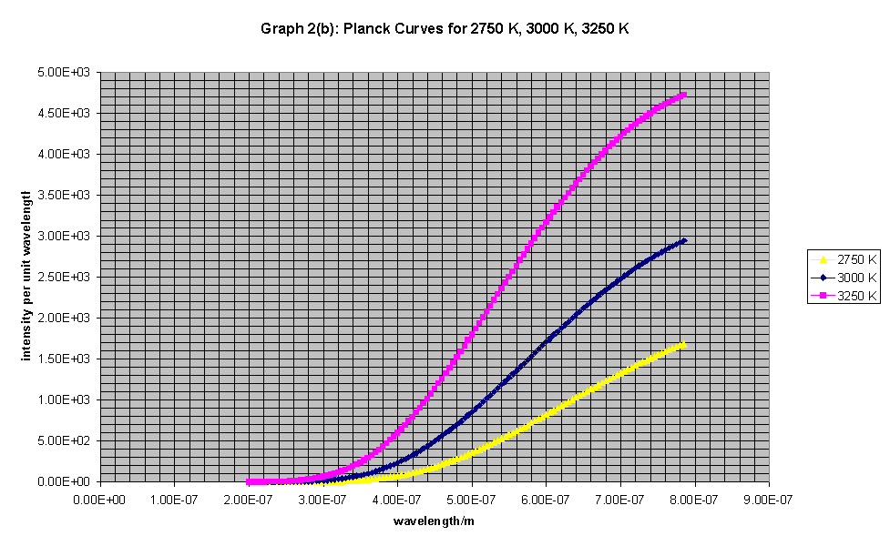

31st International Physics Olympiad
Leicester, U.K.
Experimental Competition
Wednesday, July 12th, 2000
Please read this first:
CDROM SPECTROMETER
In this experiment, you are NOT expected to indicate uncertainties in your measurements.
The aim is to produce a graph showing how the conductance* of a light-dependent resistor (LDR) varies with wavelength across the visible spectrum.
*conductance G = 1/resistance (units: siemens, 1 S = 1 W -1)
There are five parts to this experiment:
Precautions
Procedure
(a) The apparatus shown in Figure 1 has been set up so that light from bulb A falls normally on the curved grating and the LDR has been positioned in the focused first order spectrum. Move the LDR through this first-order spectrum and observe how its resistance (measured by multimeter X) changes with position.
(b) (i) Measure and record the resistance R of the LDR at different positions within this first-order spectrum. Record your data in the blank table provided.
(ii) Plot a graph of the conductance G of the LDR against wavelength l using the graph paper provided.
Note The angle q between the direction of light of wavelength l in the first-order spectrum and that of the white light reflected from the grating (see Figure 1) is given by:
sin q = l /d where d is the separation of lines in the grating.
The grating has 620 lines per mm.
The graph plotted in (b)(ii) does not represent the sensitivity of the LDR to different wavelengths correctly as the emission characteristics of bulb A have not been taken into account. These characteristics are investigated in parts (c) and (d) leading to a corrected curve plotted in part (e).
(c) If the filament of a 50 W bulb acts as a black-body radiator it can be shown that the potential difference V across it should be related to the current I through it by the expression:
V3 = CI 5 where C is a constant.
Measure corresponding values of V and I for bulb A (in the can). The ammeter is already connected and should not be adjusted.
(i) Record your data and any calculated values in the table provided on the answer sheet.
(ii) Plot a suitable graph to show that the filament acts as a black-body radiator on the graph paper provided.
(d) To correct the graph in (b)(ii) we need to know the working temperature of the tungsten filament in bulb A. This can be found from the variation of filament resistance with temperature.
If the resistance of the filament in bulb A can be found at a known temperature then its temperature when run from the 12 V supply can be found from its resistance at that operating potential difference. Unfortunately its resistance at room temperature is too small to be measured accurately with this apparatus. However, you are provided with a second smaller bulb, C, which has a larger, measurable resistance at room temperature. Bulb C can be used as an intermediary by following the procedure described below. You are also provided with a second 12V 50W bulb (B) identical to bulb A. Bulbs B and C are mounted on the board provided and connected as shown in Figure 2.
(i) Measure the resistance of bulb C when it is unlit at room temperature (use multimeter X, and take room temperature to be 300 K). Record this resistance RC1 on the answer sheet.
(iii) Use the graph of resistivity against temperature (supplied) to work out the temperature of the filaments of B and C when they are matched. Record this temperature, T2V, on the answer sheet.
(iv) Measure the resistance of the filament in bulb A (in the can) when it is connected to the 12 V a.c. supply. Once again the ammeter is already connected and should not be adjusted. Record this value, R12V on the answer sheet.
(v) Use the values for the resistance of bulb A at 2 V and 12 V and its temperature at 2 V to work out its temperature when run from the 12 V supply. Record this temperature, T12V in the table on the answer sheet.
(e) Use these graphs and the result from (d)(v) to plot a corrected graph of LDR conductance (arbitrary units) versus wavelength using the graph paper provided. Assume that the conductance of the LDR at any wavelength is directly proportional to the intensity of radiation at that wavelength (This assumption is reasonable at the low intensities falling on the LDR in this experiment). Assume also that the grating diffracts light equally to all parts of the first order spectrum.
.
Figure 1 - Experimental arrangement for (a)

Figure 1: Detail - the grating:


Figure 2

Note that this diagram does not show meters


